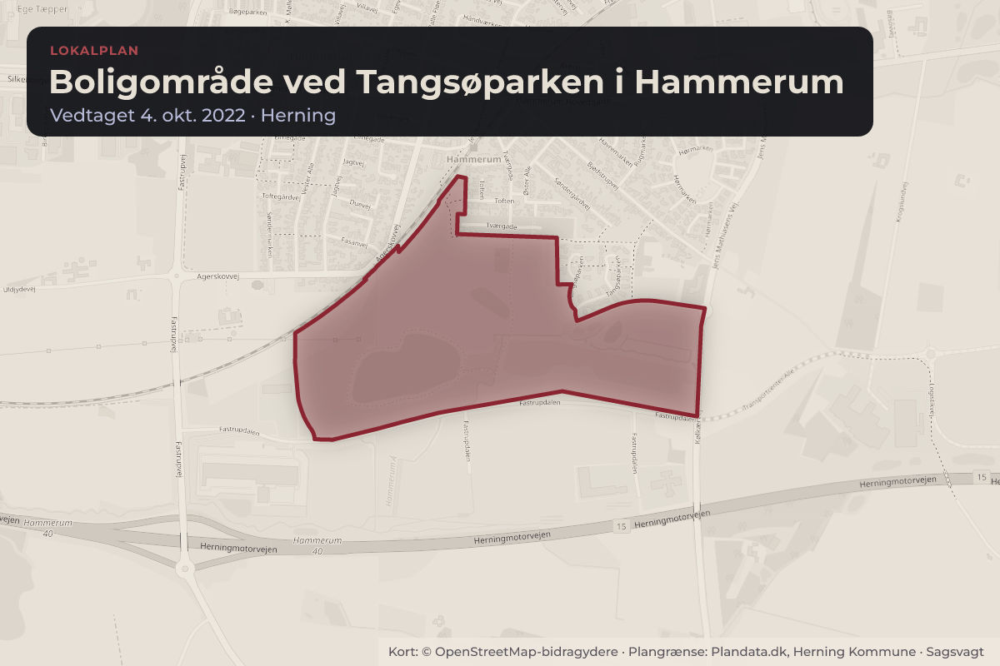
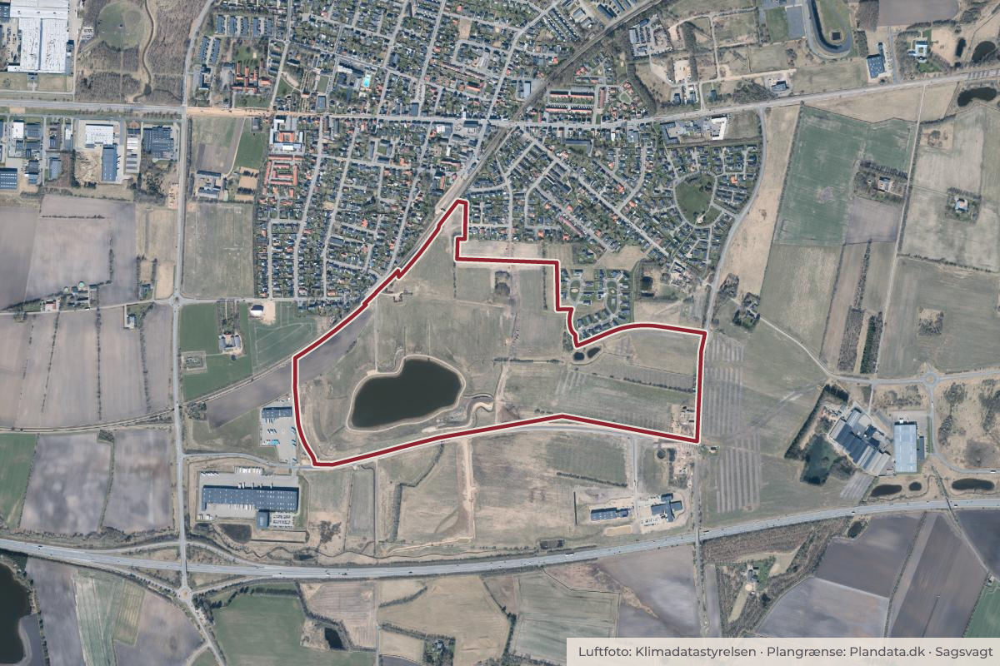

På dagsordenen 10. november, Herning Byråd, Herning
Endelig vedtagelse af lokalplan for et boligområde ved Tangsøparken i Hammerum
Herning Byråd har på mødet den 21. april 2026 foreløbigt vedtaget forslag til lokalplan nr. 31.B15.3 for boligområde ved Tangsøparken i Hammerum, Delområde V.
Bydele i sagen: Hammerum
Steder i sagen: Tangsøparken

Kort: © OpenStreetMap-bidragydere. Plangrænse: Plandata.dk, Herning Kommune.

Kort fortalt
- Forslaget
- 2 p-plads pr. bolig ved åben-lav boligbebyggelse, med mulighed for at placere den ene
- 1½ p-plads pr. bolig ved tæt/lav boligbebyggelse, samt udlægges mulighed for
- Hvem
- Herning Byråd, Herning Kommune
- Hvornår
- Tirsdag 10. november 2026
- Status
- På dagsordenen. Sagen behandles på mødet.
Hvad kan du gøre?
- Sid med til mødet
- Byrådets møder er offentlige, så du kan selv sidde med, når sagen behandles tirsdag 10. november 2026.
Læs hele sagen Kommunens egen tekst
Sagsfremstilling
I 2021 blev et dispositionsforslag over hele Tangsøområdet udarbejdet, og der udlagdes
arealer til boliger, erhverv, offentlige formål, samt et sø- og fritidslandskab.
Dispositionsforslaget førte i første omgang til lokalplan nr. 31.B15.1, hvilken blev endeligt
vedtaget den 4. oktober 2022.
Lokalplanen dækker over hele byudviklingsområdet Tangsøparken, som er opdelt i 10
delområder.
Lokalplanområdet, der ligger i den sydøstlige del af Hammerum, omfatter et areal på ca. 3,8
ha, og støder op til boligområder mod nord og øst.
Mod syd og vest afgrænses lokalplanområdet i dag af det åbne land, som på sigt forventes at
blive lokalplanlagt til boligformål i overensstemmelse med rammelokalplanen for området.
Luftfoto over lokalplanområdet
Lokalplanens formål
Det er lokalplanens formål at danne grundlag for byudvikling ved at udlægge et areal til
boligområde i den sydøstlige del af Hammerum, samt sikre bevaring af eksisterende
beplantning.
Herudover skal lokalplanen sikre tilgængelighed i og til området, ved fastlæggelse af placering
af vej- og stiforbindelser. Stiforbindelserne skal sikre forbindelsen til de øvrige boligområder.
Lokalplanens indhold
Lokalplanen er en byggeretsgivende lokalplan, der fastlægger de overordnede rammer for
områdets anvendelse og disponering.
Der må indenfor området opføres boligbebyggelse som åben-lav og tæt-lav bebyggelse samt
fælleshus, med dertilhørende vej- og stiforbindelser, samt fælles fri- og opholdsarealer.
Herudover afsættes der areal til regnvandshåndtering.
Gældende plangrundlag
Forslag til lokalplan nr. 31.B15.3 er en del af lokalplan nr. 31.B15.1
Lokalplanområdet vil med den endelige vedtagelse overgå fra en rammelokalplan til en
byggeretsgivende lokalplan.
Infrastruktur
Lokalplanområdet skal vejbetjenes sydfra via Tangsøparken.
Offentlig høring
Forslag til lokalplanen har været i offentlig høring i perioden fra den 30. april 2026 til den 28.
Der er i perioden indkommet en indsigelse fra Vejdirektoratet til planforslaget. Derudover er der
modtaget et høringssvar fra borgere i området efter høringsfristens udløb.
Indsigelsen fra Vejdirektoratet samt høringssvaret fra de berørte borgere kan ses i deres fulde
ordlyd i det vedlagte høringsnotat.
Vejdirektoratet
1. Vejdirektoratet gør indsigelse mod lokalplanforslaget, da planlægningen ikke i tilstrækkelig
grad sikrer, at støjforhold fra Herningmotorvejen håndteres gennem bindende bestemmelser.
Forvaltningen har været i dialog med Vejdirektoratet og har fremsendt et revideret
lokalplanforslag, der tager højde for ovennævnte punkter.
Vejdirektoratet har efterfølgende fremsendt en skrivelse med tilkendegivelse af, at indsigelsen
vil kunne frafaldes, hvis nærværende lokalplanforslag ændres i overensstemmelse med
forvaltningens indsendte rettelse.
Rettelsen omhandler tilføjelse af §12.1: støjdæmpende foranstaltninger uden for
lokalplanområdet er etableret, således Miljøstyrelsens vejledende grænseværdier for støj er
overholdt.
Borgere i området
2. Borgerne oplyser, at de gennem flere år har observeret flagermus ved Tangsøparken 58 og
sætter spørgsmålstegn ved lokalplanens konklusion om, at der ikke er registreret flagermus i
området. Derudover udtrykker de bekymring for højtliggende bebyggelse i delområde II, som
efter deres vurdering kan medføre øget indkigsgener og værdiforringelse af de eksisterende
boliger i Tangsøparken.
Forvaltningens vurdering
I overensstemmelse med den tidligere dialog med Vejdirektoratet om betingelserne for at
frafalde indsigelsen, foreslår forvaltningen at lokalplanen suppleres med følgende
bestemmelse:
§ 12.1 Støjdæmpende foranstaltninger uden for lokalplanområdet er etableret, således
Miljøstyrelsens vejledende grænseværdier for støj er overholdt.
Forvaltningen har desuden konstateret en redaktionel fejl, idet bestemmelsen om parkering
ikke fremgår af lokalplanteksten. Det foreslås derfor, at lokalplanen suppleres med følgende
bestemmelse:
§ 4.10 Der skal minimum etableres følgende parkering:
- 2 p-plads pr. bolig ved åben-lav boligbebyggelse, med mulighed for at placere den ene pplads, som samlet parkering inden for boligområdet.
- 1½ p-plads pr. bolig ved tæt/lav boligbebyggelse, samt udlægges mulighed for yderligere at
etablere ½ p-plads pr. bolig, hvis der opstår behov herfor.
Endvidere er der foretaget en intern, tværfaglig vurdering af bebyggelseshøjden i området.
På baggrund heraf foreslår forvaltningen, at den maksimale bebyggelseshøjde reduceres fra to
etager til én etage.
Som følge heraf udgår støjkonsekvenszonen på kortbilag 2, og § 7.2 ændres til følgende
ordlyd:
§7.2 Inden for delområde I og II, (jf. kortbilag 2) må bebyggelse opføres i maksimalt én etage.
Indstilling
BYPLAN- OG BOSÆTNINGSUDVALGET INDSTILLER,
at lokalplan nr. 31.B15.3 for Boligområde ved Tangsøparken i Hammerum, Delområde V,
indstilles til endelig vedtagelse med følgende ændringer:
at der tilføjes ’§ 12.1 støjdæmpende foranstaltninger uden for lokalplanområdet er
etableret, således Miljøstyrelsens vejledende grænseværdier for støj er overholdt’.
at der tilføjes ’§ 4.10 Der skal minimum etableres følgende parkering:
- 2 p-plads pr. bolig ved åben-lav boligbebyggelse, med mulighed for at placere den ene
p-plads, som samlet parkering inden for boligområdet.
- 1½ p-plads pr. bolig ved tæt/lav boligbebyggelse, samt udlægges mulighed for
yderligere at etablere ½ p-plads pr. bolig, hvis der opstår behov herfor.
at lokalplanforslagets §7.2 ændres til ’Inden for delområde I og II, (jf. kortbilag 2) må
bebyggelse opføres i maksimalt én etage’.
at støjkonsekvenszonen på kortbilag 2 udgår.
Økonomi-, Erhvervs- og Uddannelsesudvalget anbefaler sagen til Byrådet.
Kilde: Herning Kommune, Herning Byråd, dagsorden fra mødet tirsdag 10. november 2026, punkt 9. Læs den originale sag hos kommunen.